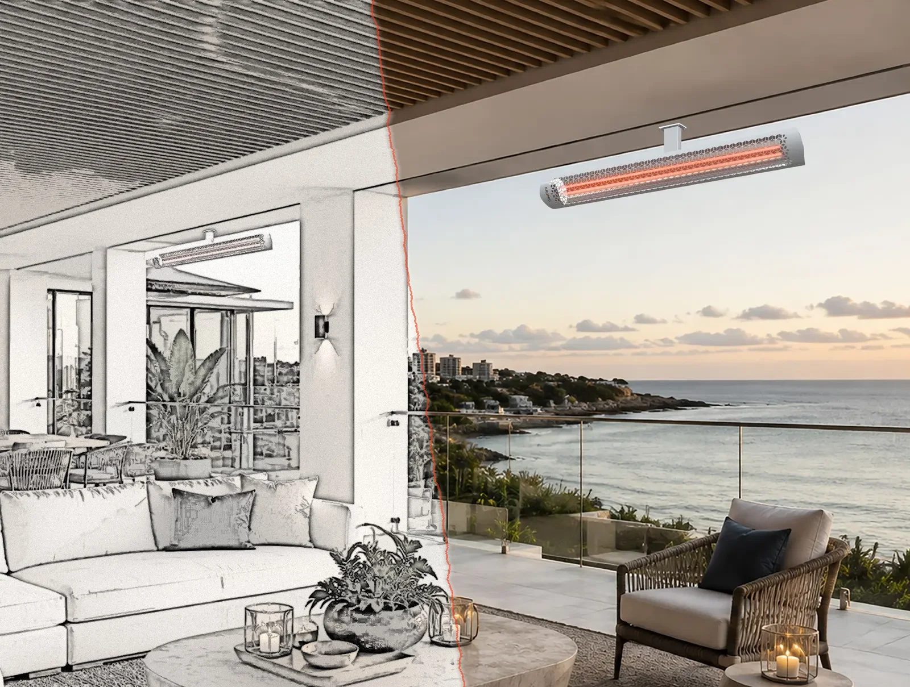
Outdoor Living
Trends 2027
10 shifts making heat part of the Australian alfresco. For architects, builders, homeowners and hospitality.
Every Alfresco Starts As A Sketch
The ones used all year have heat drawn in from the first line.
Australians already live outside. The change for 2027 is that the alfresco is becoming an all-electric, all-year room: new homes are going electric by law, solar is on four in ten roofs, renovators are finishing the patios they have, and cities are making outdoor dining permanent.
The next step is comfort. An alfresco is only as useful as the evenings it stays warm – and that is where heat becomes essential.
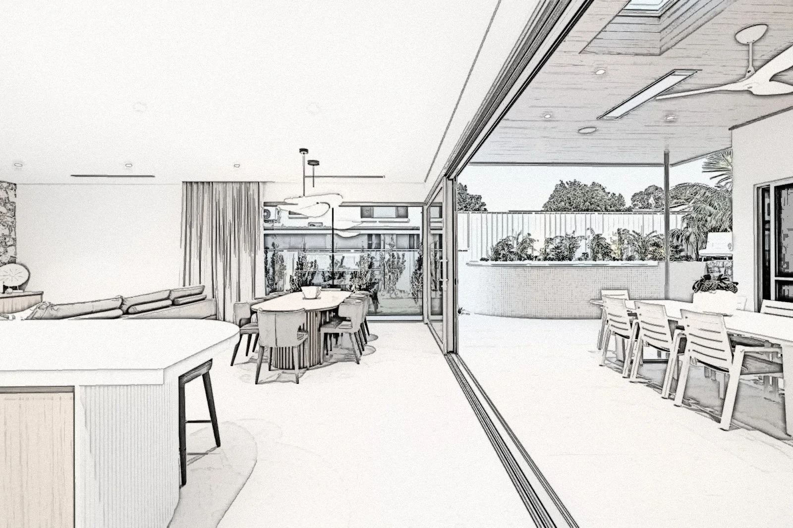
The Alfresco, By The Numbers
"Outdoor area" was the fifth most-searched home keyword of 2025 – and "heating" was tenth
PropTrack, January 2026renovation spend in 2025-26, up almost 5% – 37% of all housing spend
KPMG, October 2026new Victorian homes and most new commercial buildings must be all-electric
Victorian Building and Plumbing Amendment Regulations 2025of the outdoor structures market is pergolas and patios, growing 6.9% a year to 2033
Grand View Research, 2026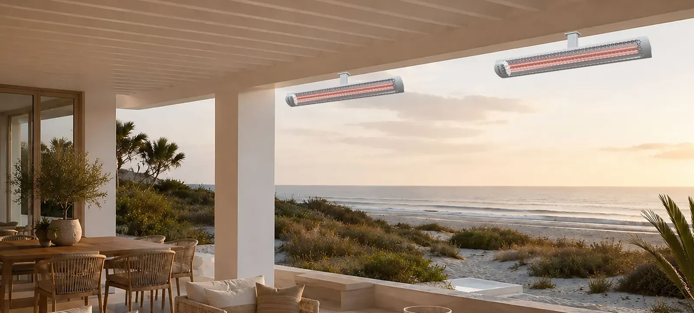
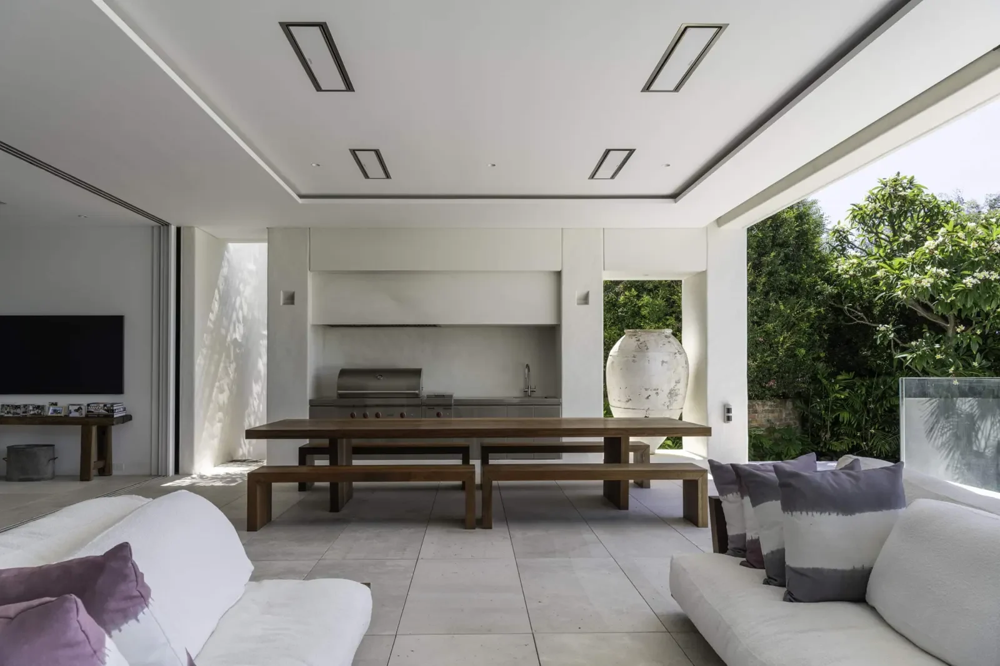
The Alfresco Goes All-Electric
- Electrify
- Pre-Wire
- Comply
Victoria requires new homes and most new commercial buildings to be all-electric from 1 January 2027. The ACT has blocked new gas network connections since December 2023, and City of Sydney's all-electric rules for new homes extend to outdoor gas appliances and large hotels from 2027.
- 2024Victoria: no gas connection in permits for new dwellings lodged from 1 January 2024
- Dec 2023ACT: new gas network connections blocked (bottled LPG is not covered)
- 2027City of Sydney: outdoor gas appliances in new homes, and hotels over 100 rooms, all-electric from 1 January 2027
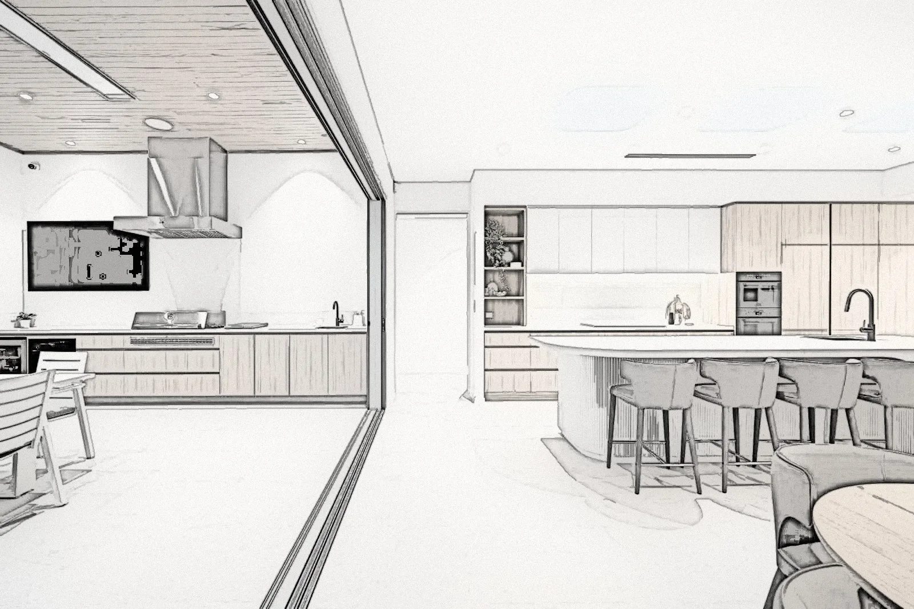
In new homes, the outdoor heater is electric by law – so it belongs in the electrical plan.
Architects
Specify electric radiant heat at DA stage.
Builders
Run heater circuits in the alfresco ceiling at frame stage.
Homeowners
In a new Victorian home, outdoor heat will be electric – plan it with the lighting.
Electric infrared is the outdoor heat built for an all-electric Australia.
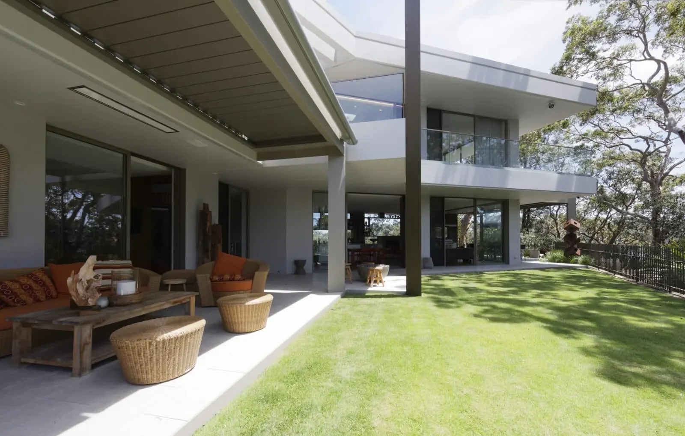
Solar-Powered Evenings
- Generate
- Store
- Warm
About four in ten Australian homes have rooftop solar, and home batteries are surging. With electricity prices up as rebates ended, households want outdoor heat that is efficient and easy to control.
- 28.3 GWof rooftop solar across about 4.3 million installations by the end of 2025
- 1 GWof rooftop solar installed in Q2 2026 – a record quarter
- +13.2%electricity prices in the year to August 2026 (ABS CPI)
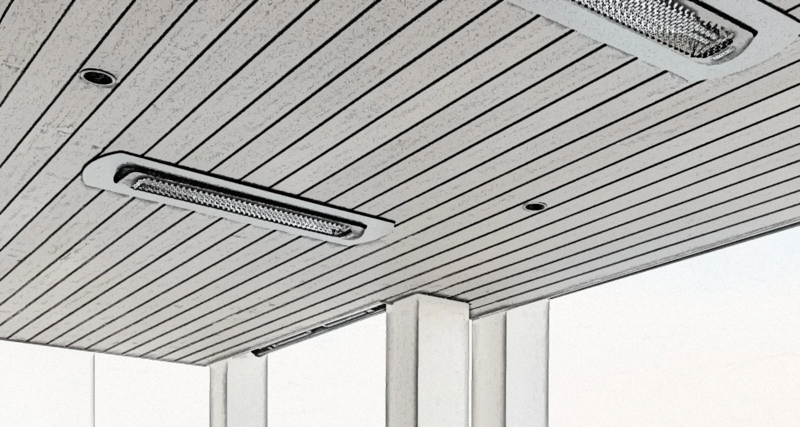
Stored sunshine can warm the evening, and control keeps the draw low.
Homeowners
Run evening heat from stored solar; dimming and zoning keep the draw low.
Builders
Put outdoor heating on the home-energy plan with the battery.
Hospitality
Time heat to service hours, zone by zone.
Dimmable, zoned infrared heats people, not the air, so every kilowatt counts.
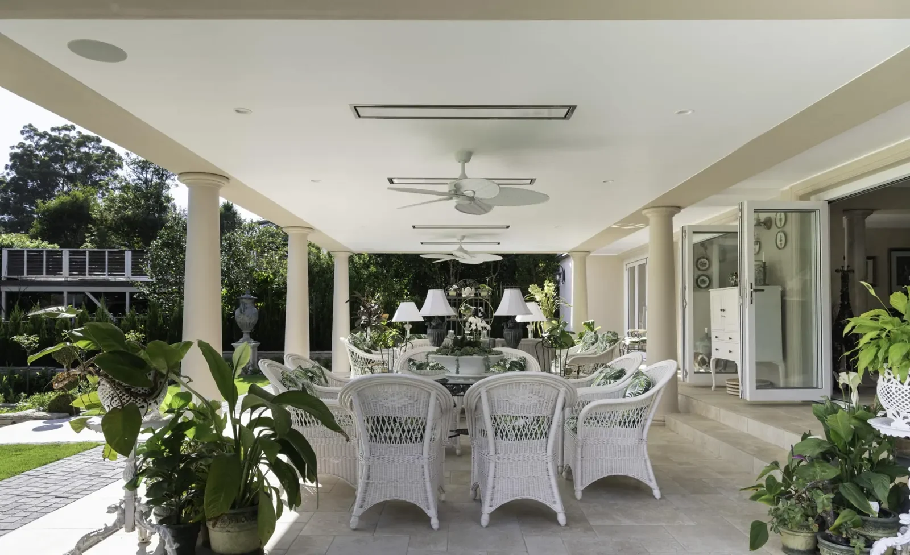
The Renovation-Led Alfresco
- Upgrade
- Retrofit
- Extend
Australians are improving the homes they already have. Renovation spend is close to its peak, renovation lending is almost three times its pre-pandemic level, and the existing patio is the next room to finish.
- 37%of all housing spend goes on renovation (40% at the 2021-22 peak)
- ~3×renovation lending against pre-pandemic levels; activity growing twice as fast as the economy (HIA)
- ~50%NSW renovation investment expected to outpace Victoria by nearly half in 2026 (HIA)

The biggest market is the alfresco that already exists.
Builders
Lead with the retrofit: the patio already exists, the heat does not.
Architects
Detail surface-mount and retrofit options alongside recessed ones.
Homeowners
Add a roof, light and heat to the alfresco you have.
A heater mounts to the patio you have, turning it into a room you use all year.
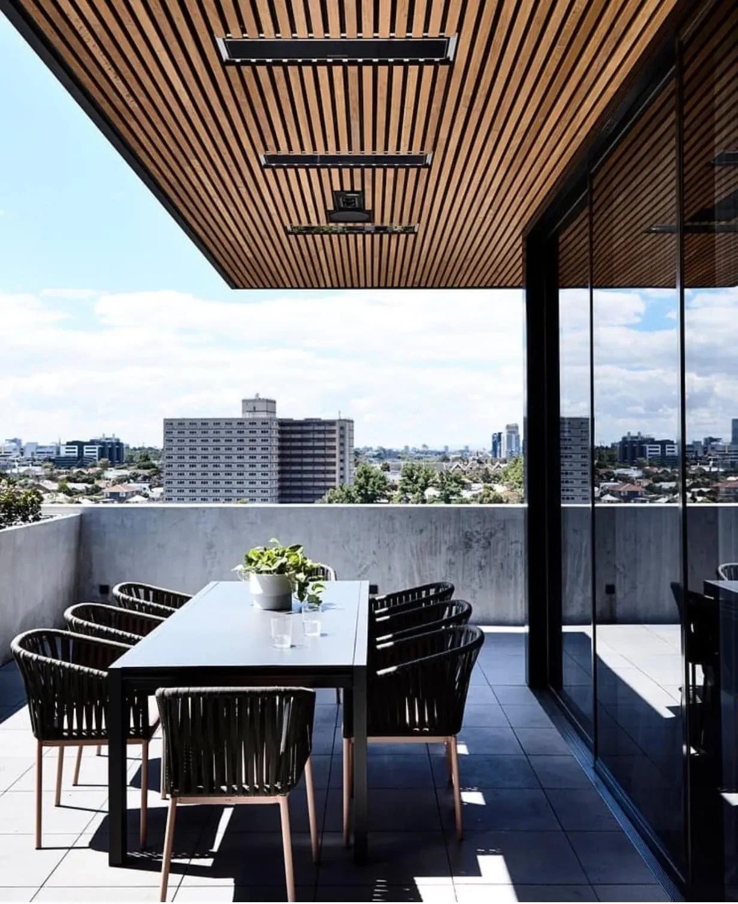
Smaller Lots, Harder-Working Outdoor Space
- Compact
- Elevate
- Zone
Lots are shrinking while houses hold their size, and apartments are rising. Buyers still search for outdoor areas, balconies and courtyards – the outdoor space just has to work harder.
- #7"Balcony" was among the top ten home searches of 2025 (PropTrack)
- +13.2%apartment approvals in 2025-26 – 48,778 approved (ABS)
- +62%growth in searches for "courtyard" in 2025 (PropTrack)
Compact outdoor spaces need heat that takes no floor space.
Designers
Use wall, ceiling and recessed heat to keep small courtyards and balconies free.
Developers
Sell heated balconies and rooftops; strata rules favour electric.
Homeowners
One well-placed heater makes a courtyard a nightly room.
Low-clearance and recessed heat fits the spaces Australians are building now.

The Roof Over The Alfresco
- Shelter
- Mount
- Integrate
Pergolas and patio roofs dominate the outdoor structures market, and pavilions are the fastest-growing segment. Every roof is a mounting surface for heat.
- 6.9%a year: Australia’s outdoor structures market growth to 2033, ahead of the world (6.1%)
- US$54.2Mestimated market in 2026, rising to US$86.5M by 2033
- FastestPavilions and gazebos are the fastest-growing segment
The roof, the power and the heat are one decision.
Patio builders
Bundle heat, light and power with the roof.
Architects
Detail heaters into louvre and pergola framing.
Homeowners
Plan the heat with the roof, not after it.
Every pergola and louvred roof is a place for heat.
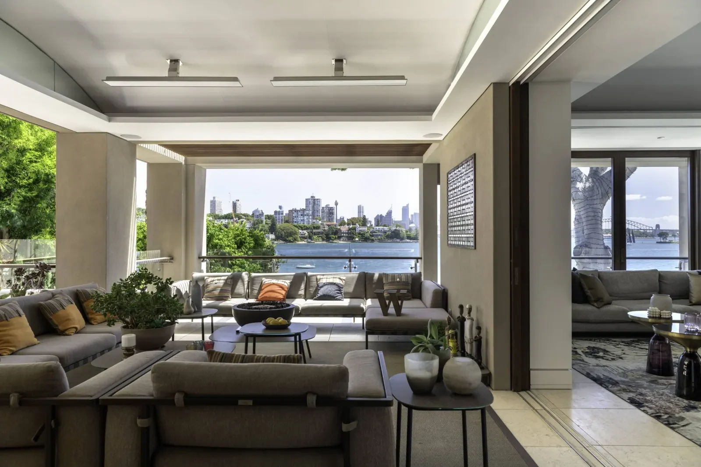
Milder Winters, Still-Cold Nights
- Evening
- Winter
- Comfort
Winter 2026 was the warmest on record in Sydney, Melbourne and Canberra. Days are milder and drier, so more evenings are worth spending outside – yet the nights still fall cold.
- 15.29 °CSydney’s warmest winter on record; Melbourne 12.18 °C and Canberra 8.14 °C too (provisional)
- 5 statesfell below zero on the night of 6 July 2026
- −16%cool-season rainfall in the southwest since 1970; −9% in the southeast since 1994 (CSIRO/BOM)
Drier, milder winters bring more usable evenings; radiant heat closes the gap after sunset.
Hospitality
Sell winter covers on the terrace.
Homeowners
The alfresco works in July when the chill is handled.
Designers
Design for sunset comfort, not midday sun.
The Australian winter is made for outdoor living, once the evening chill is handled.
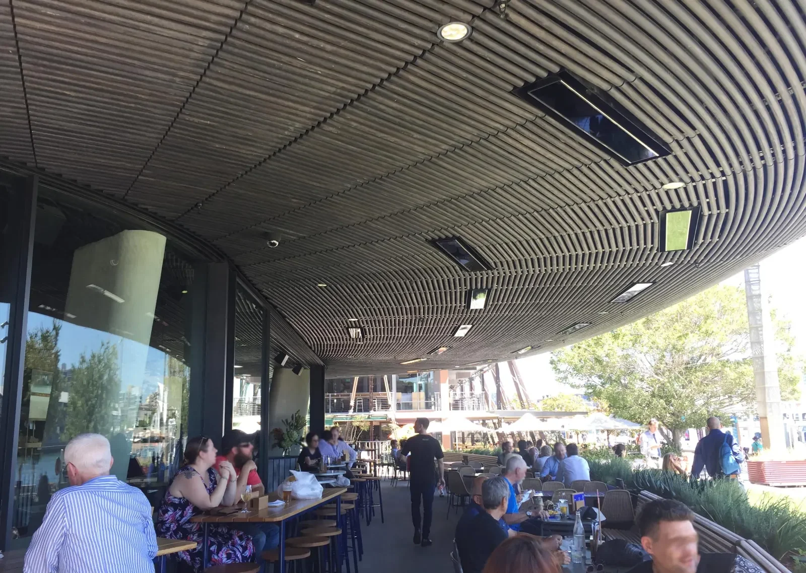
Alfresco Is Policy
- Permit
- Extend
- Stay
Cities are making outdoor dining permanent. City of Sydney has waived outdoor dining fees for good, NSW has relaxed its rules, and Melbourne’s parklets are permanent.
- ~1,000outdoor dining approvals in the City of Sydney, about 13,000 m² of outdoor area
- Fee-freeCity of Sydney waived outdoor dining fees permanently from 30 June 2025
- 580+NSW businesses use the relaxed outdoor dining rules; 380 ongoing approvals
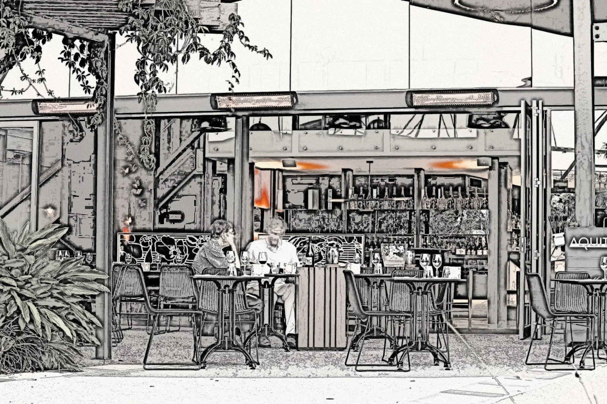
Permanent outdoor seats need permanent, permitted comfort.
Operators
Treat heated seats as fixed capacity.
Designers
Specify durable fixed heat, not portables.
Councils
Expect heated, covered terraces to become the norm.
Fixed electric heat turns a permanent permit into a year-round seat.

Every Outdoor Seat Must Earn Its Keep
- Covers
- Margin
- Control
Hospitality turns over more than A$66 billion, but closures and defaults are high. A heated outdoor seat used all year is one of the few ways to add capacity without adding rent.
- 10.4%of foodservice businesses closed in a year – the highest of any sector (R&CA)
- 1.15%café and restaurant payment defaults, against 0.31% nationally (CreditorWatch, July 2026)
- +2.5%café, restaurant and takeaway turnover growth in 2024-25
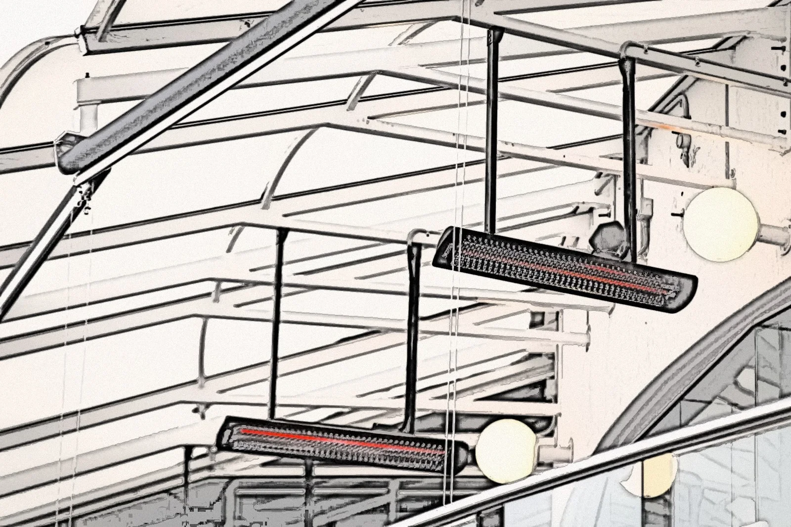
Heating has to pay back in seat-hours, and zoned control keeps running costs down.
Operators
Measure heated seats in covers per season, not degrees.
Designers
Zone heat by table and bar.
Venues
Switch zones with the bookings, so only seats in use are warm.
A heated seat earns through winter; zoned control means you pay only for the seats in use.
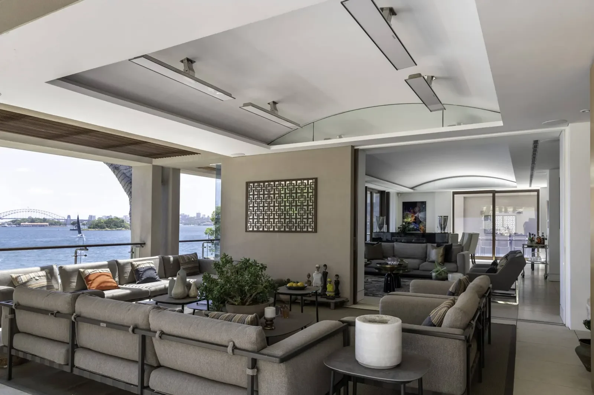
Connected Comfort
- Control
- Scene
- Schedule
Smart homes are now the Australian norm, and households set money aside for them. Outdoors, heat joins the lights and the music in one scene.
- 71%of households have a smart-home budget, up from 44% two years earlier
- A$3,500+average smart-home budget
- A$11bn+smart home market forecast for 2026, from A$7.7bn in 2025
Heat joins lighting and audio in one scene.
Integrators
Add heat zones to the outdoor scene.
Homeowners
Dim, zone and schedule heat from an app.
Hospitality
Set zones by table and by time.
Affinity Smart-Heat controls dim, zone and schedule heat with the rest of the home. App and Wi-Fi features need compatible Affinity controls, sold separately.
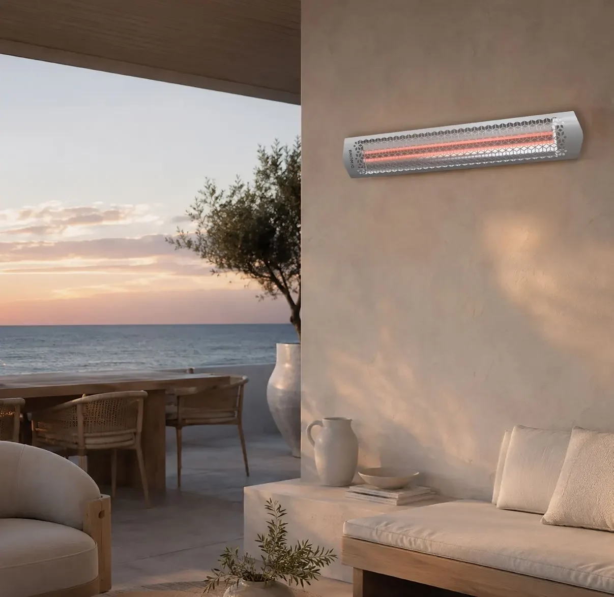
Coastal, Seamless, Indoor-Outdoor
- Coast
- Open
- Disappear
Australians live by the coast, and the design forecasts are about opening the house to the outdoors – stacker doors, seamless thresholds and heat that disappears into the ceiling.
- Modern Coastala named 2026 home style (James Hardie / WGSN Modern Homes Forecast)
- Stacker doorsopen whole living areas to the alfresco in 2026 builder ranges
- 2026“the year of the outdoor room” – Home Beautiful
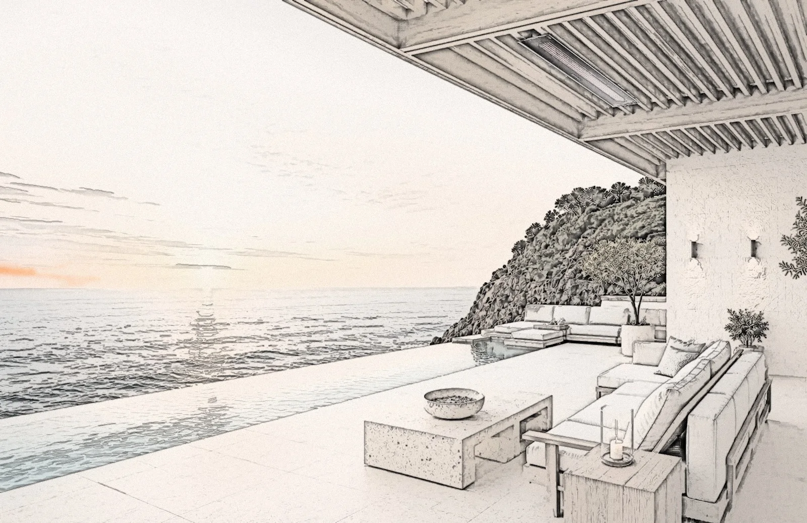
Coastal homes need heat made for salt air, and design that disappears.
Architects
Specify corrosion-resistant, flush heat that disappears into the ceiling.
Homeowners
Choose finishes made for salt air.
Builders
Include heat in the stacker-door alfresco package.
Heat designed for coastal homes and recessed out of sight.
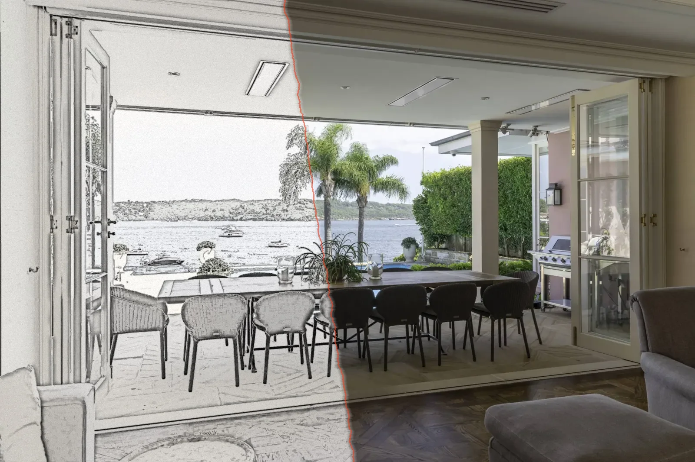
From Optional To Essential: Plan Heat From The Start
Australia is building all-electric, renovating the homes it has, roofing its alfrescos and making outdoor dining permanent. Every shift ends in the same place: heat belongs in the first drawing, wired at frame stage and controlled with the rest of the home.
About 4 in 10 Australian homes already make their own power – the energy for evening heat is on the roof.
Australian Energy Council, 2025- Heater circuits sized at frame stage (AS/NZS 3000)
- Heat recessed or mounted cleanly into pergolas, louvres and ceilings
- One control scene for light, sound and heat
- More months, more evenings, more covers
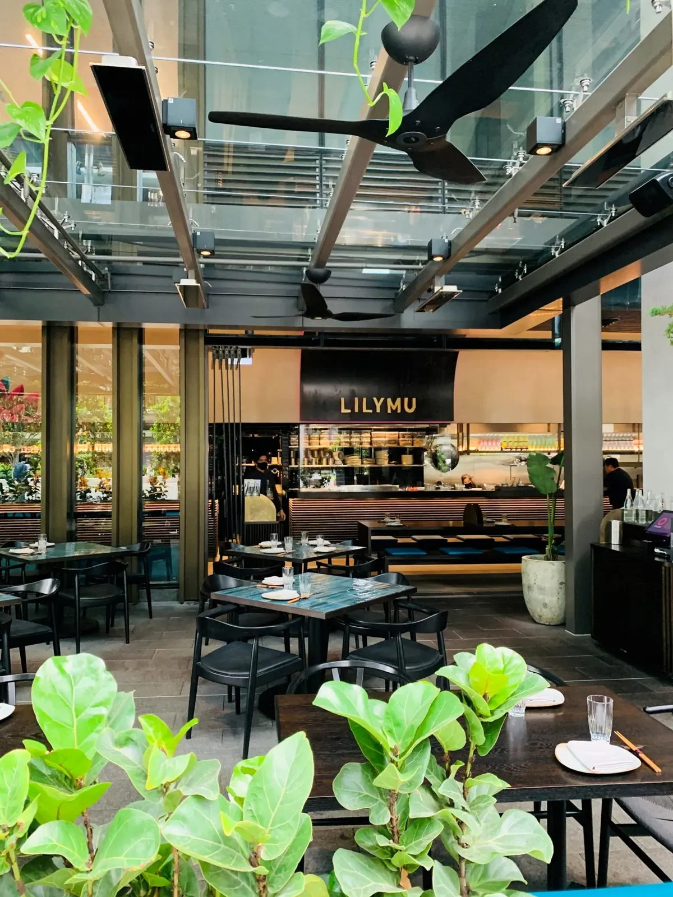
- ArchitectsDraw it.
- BuildersWire it.
- HomeownersAsk for it.
- OperatorsEarn from it.
Where The Numbers Come From
- Victorian Building and Plumbing Amendment Regulations 2025 (S.R. 25-140); Planning Victoria, amendment VC250 and the Gas Substitution Roadmap; ACT Government, gas network connections (from 8 December 2023); City of Sydney, all-electric buildings (October 2025).
- Australian Energy Council, April 2025 (rooftop solar share); Clean Energy Council, via pv magazine, February 2026; Clean Energy Regulator, August 2026.
- Australian Bureau of Statistics: Consumer Price Index (July and September 2026); Building Approvals (July 2026); Retail Trade, via Restaurant & Catering Australia (August 2025). ABS 2001 coastal population figure.
- KPMG, renovation and new-build spending, October 2026.
- Housing Industry Association: renovation lending (November 2025) and outlook (October 2025).
- PropTrack: keyword searches (January 2026) and land and house sizes (October 2025).
- Grand View Research, Australia Outdoor Living Structure Market Outlook and global report, 2026 (analyst estimates).
- Weatherzone, winter 2026 records (provisional) and 6 July 2026 overnight lows; CSIRO and Bureau of Meteorology, State of the Climate 2024.
- City of Sydney, outdoor dining fees permanently waived (July 2025); NSW Government, vibrancy reforms (March 2026).
- Restaurant & Catering Australia (February 2026); CreditorWatch (July 2026).
- Telsyte Australian Smart Home Market Study 2025–2029, via iTWire (October 2026).
- James Hardie / WGSN Modern Homes Forecast 2026; Home Beautiful, 2026 style forecast.
Market figures are research estimates, not audited sales. Provisional weather records are marked. Photography: Bromic installations in Australia and Bromic Lookbook 2026; sketch renderings are made from those photographs. Wi-Fi and app features need compatible Affinity controls, sold separately. Check local codes and state rules; installation by a licensed electrician or gasfitter.